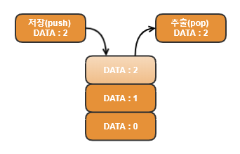
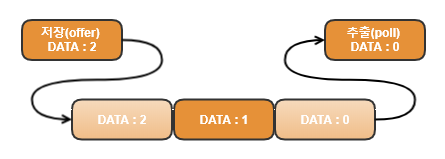
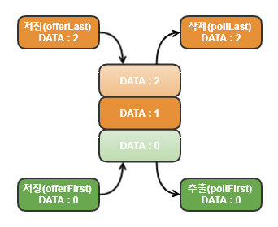

Stack & Queue
스택(Stack)
스택(Stack)은 마지막에 저장한 데이터를 가장 먼저 꺼내게 되는 LIFO(Last In First Out)구조로 되어있습니다. 즉, 가장 늦게 저장(push)한 데이터가 가장 먼저 출력(pop)되는 구조의 자료구조입니다.
LIFO(Last In First Out)

Stack 메서드
|
boolean empty()
: Stack이 비어있는지 알려줍니다. 해당 스택이 비어 있으면 true를, 비어 있지 않으면 false를 반환합니다. |
|
Object peek()
: Stack의 맨 위에 저장된 객체를 반환합니다. pop()과 달리 Stack에서 객체를 꺼내지는 않습니다. (비어있을 때는 EmptyStackException이 발생합니다.) |
|
Object pop()
: Stack의 맨 위에 저장된 객체를 꺼냅니다. (비었을 때는 EmptyStackException이 발생됩니다.) |
|
Object push(Object item)
: Stack에 객체(item)을 저장합니다. |
|
int search(Object o)
: Stack에서 주어진 객체(o)를 찾아서 그 위치를 반환합니다. 못찾으면 -1을 반환합니다. (배열과 달리 위치는 0이 아닌 1부터 시작합니다.) |
큐(Queue)
큐(Queue)는 처음에 저장한 데이터를 가장 먼저 꺼내게 되는 FIFO(First In First Out)구조로 되어있습니다. 즉, 가장 먼저 저장된(offer) 데이터가 가장 먼저 인출(poll)되는 구조를 자료구조입니다.
FIFO(First In First Out)

Queue 메서드
|
boolean add(Object e)
: 해당 큐의 맨 뒤에 전달된 요소를 삽입함. 만약 삽입에 성공하면 true를 반환하고, 큐에 여유 공간이 없어 삽입에 실패하면 IllegalStateException을 발생시킴. |
|
Object element()
: 해당 큐의 맨 앞에 있는(제일 먼저 저장된) 요소를 반환함. |
|
boolean offer(Object e)
: 해당 큐의 맨 뒤에 전달된 요소를 삽입함. |
|
Object peek()
: 해당 큐의 맨 앞에 있는(제일 먼저 저장된) 요소를 반환함.(만약 큐가 비어있으면 null을 반환함.) |
|
Object poll()
: 해당 큐의 맨 앞에 있는(제일 먼저 저장된) 요소를 반환하고, 해당 요소를 큐에서 제거함.(만약 큐가 비어있으면 null을 반환함.) |
|
Object remove()
: 해당 큐의 맨 앞에 있는(제일 먼저 저장된) 요소를 제거함. |
StackQueueEx.java
package kinco.java.std;
import java.util.*;
class StackQueueEx {
public static void main(String[] args) {
// Stack 선언
Stack st = new Stack();
// Queue 인터페이스의 구현체인 LinkedList를 사용
Queue q = new LinkedList();
//Stack에 데이터 저장
st.push("0");
st.push("1");
st.push("2");
// Queue에 데이터 저장
q.offer("0");
q.offer("1");
q.offer("2");
// Stack 출력
System.out.println("### Stack ###");
while(!st.empty()) {
System.out.println(st.pop());
}
// Queue 출력
System.out.println("### Queue ###");
while(!q.isEmpty()) {
System.out.println(q.poll());
}
}
} Console
### Stack ###
2
1
0
### Queue ###
0
1
2디큐(Deque)
디큐(Deque)는 큐(Queue)의 변형으로, 양쪽 끝에 추가/삭제가 가능합니다. 디큐의 조상은 큐이며, 구현체로는 ArrayDeque와 LinkedList등이 있습니다.
즉, 큐와 스택을 하나로 합쳐놓은 것과 같으며 스택으로 사용할 수 있고, 큐로도 사용할 수 있습니다.
Deque

Deque & Queue & Stack
| Deque | Stack | Queue |
|---|---|---|
| offerLast() | push() | offer() |
| pollLast() | pop() | |
| pollFirst() | poll() | |
| peekFirst() | peek() | |
| peekLast() | peek() |